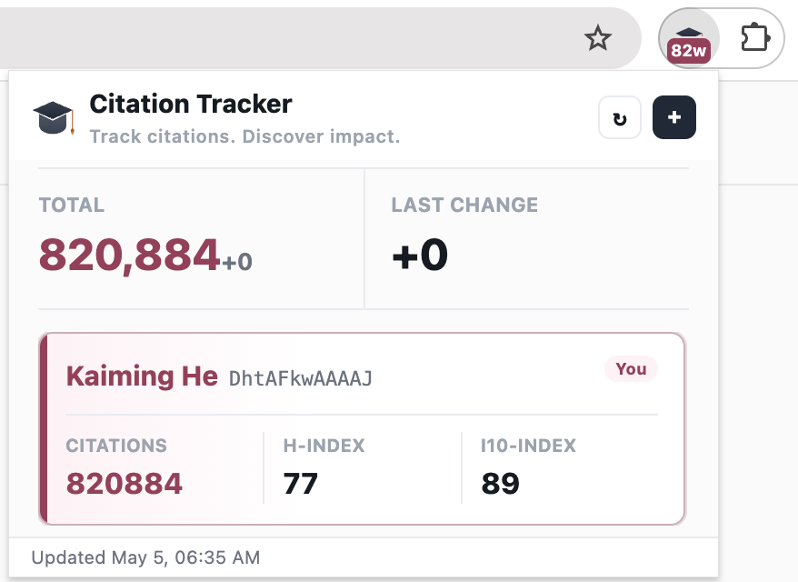

自动刷新
每 30 分钟自动更新引用数据，无需手动查看。
徽章计数
引用数直接显示在工具栏徽章上，一目了然。
多账号追踪
同时追踪自己和他人主页，一个弹窗全掌握。
安装

- 从 Chrome 应用商店安装扩展
- 点击工具栏图标，输入你的 Google Scholar 用户 ID
- 完成 — 引用数即刻显示在徽章上
从 Scholar 主页 URL 中获取你的 ID：
scholar.google.com/citations?user=DhtAFkwAAAAJ&hl=en
开发者模式安装
- 克隆或下载本项目到本地
- 打开 Chrome，地址栏输入
chrome://extensions - 开启右上角「开发者模式」开关
- 点击「加载已解压的扩展程序」，选择项目的
chrome目录 - 安装完成，工具栏出现 Citation Tracker 图标